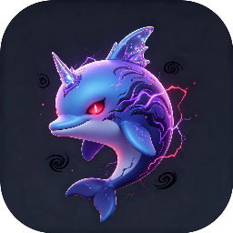

DeepSeek Harness Desktop
工作台
dsh
插件
关于
DeepSeek Harness Desktop
正在启动 dsh 工作台…
dsh 就绪后自动进入，首次启动约需 10-30 秒
准备 dsh 运行时
DeepSeek Harness Desktop 桌面壳 · 首次启动
准备安装 dsh 运行时
首次安装约 300MB；可展开高级选项选择版本与 Registry 源
安装 dsh
取消安装
安装失败
重试
高级选项
Registry 源
刷新版本
版本
加载中…
更改将应用于本次下载。Registry 源建议保持默认；改动后点「刷新版本」重新获取列表。
当前版本
—
当前
检查更新
更新到最新
发现新版本
v?
更新到最新
版本列表
已安装的历史版本可直接切换
Registry 源
安装与更新 dsh 时使用的下载源
保存
已安装插件
—
尚未安装插件 · 在下方输入包名开始安装
安装插件
支持 npm 包名或 scoped 包名；操作完成后工作台自动重启
安装
卸载
输出
清空
DeepSeek Harness Desktop
版本
—
· stable · 桌面壳（Tauri）
作者 Jedeiah · MIT License
项目主页 github.com/Jedeiah/dsh-desktop ↗
检查更新
下载并安装更新
在浏览器打开下载页
卸载
此操作不可撤销
仅卸载应用
保留 ~/.dsh 配置与数据，便于将来重装
卸载（保留数据）
完整卸载
同时删除 ~/.dsh 中全部配置、插件与版本数据，不可恢复
完全卸载